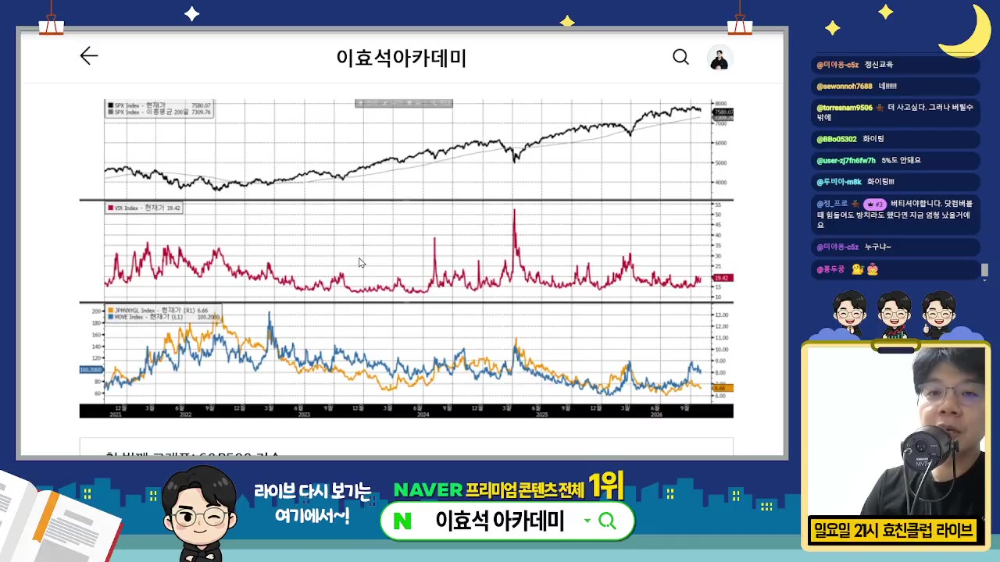
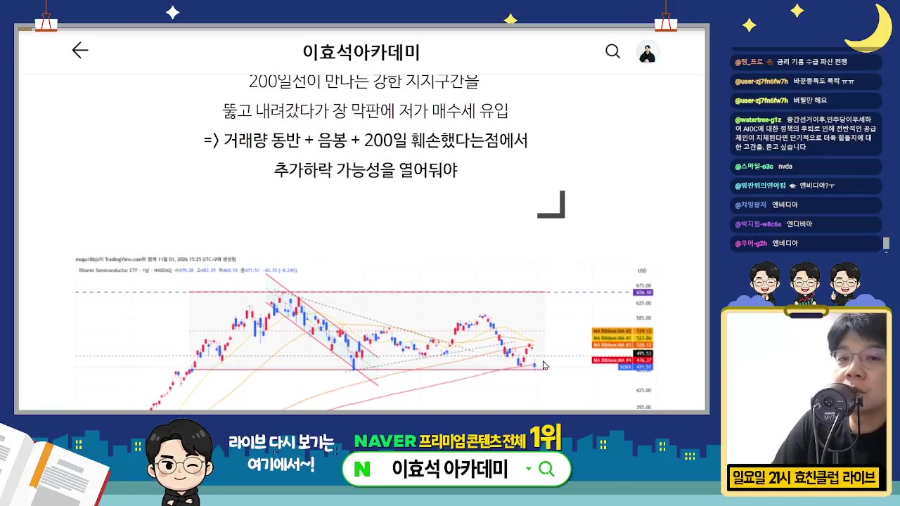
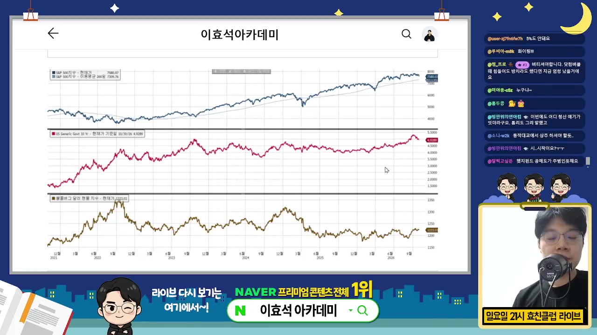
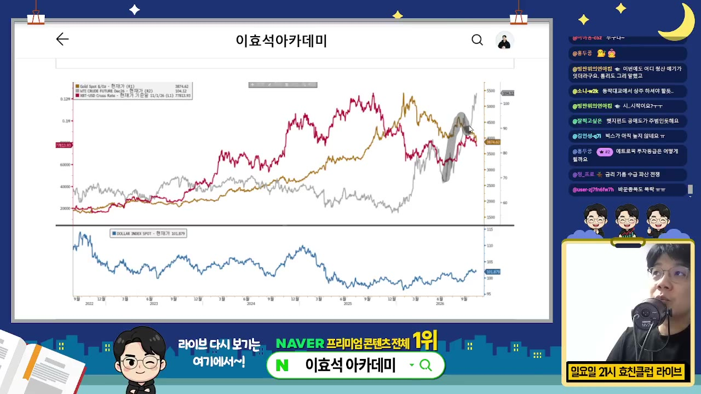
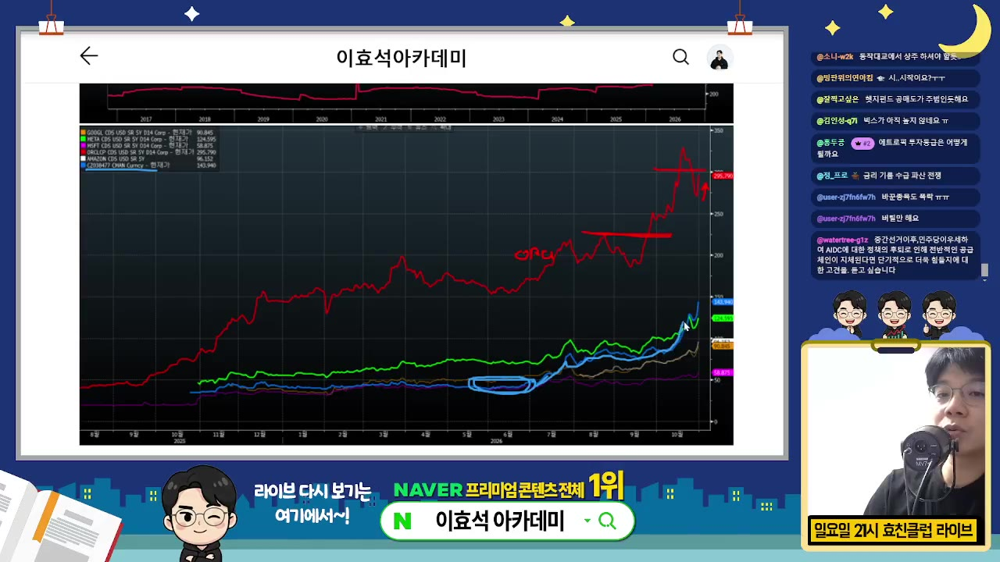
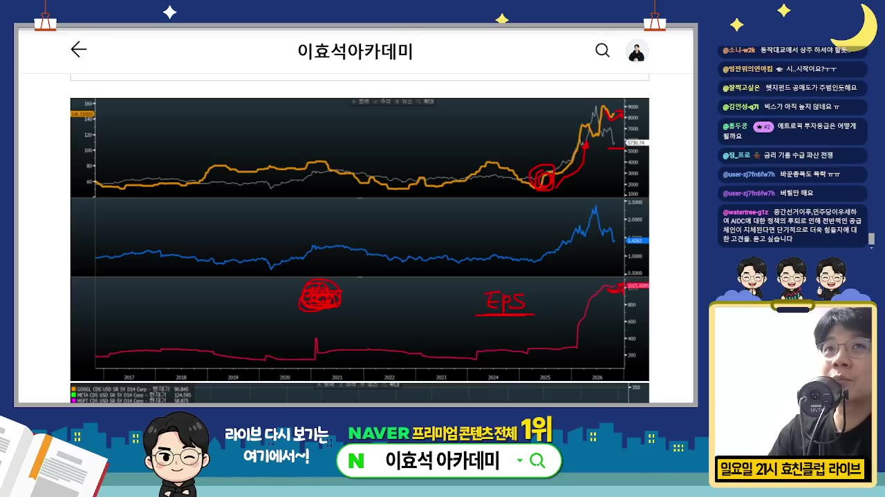
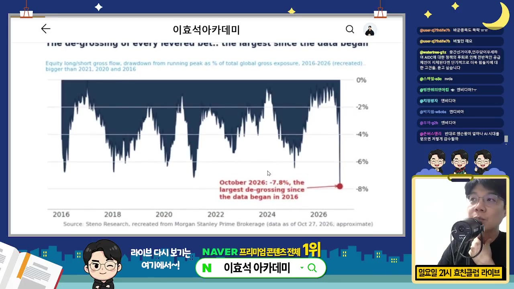
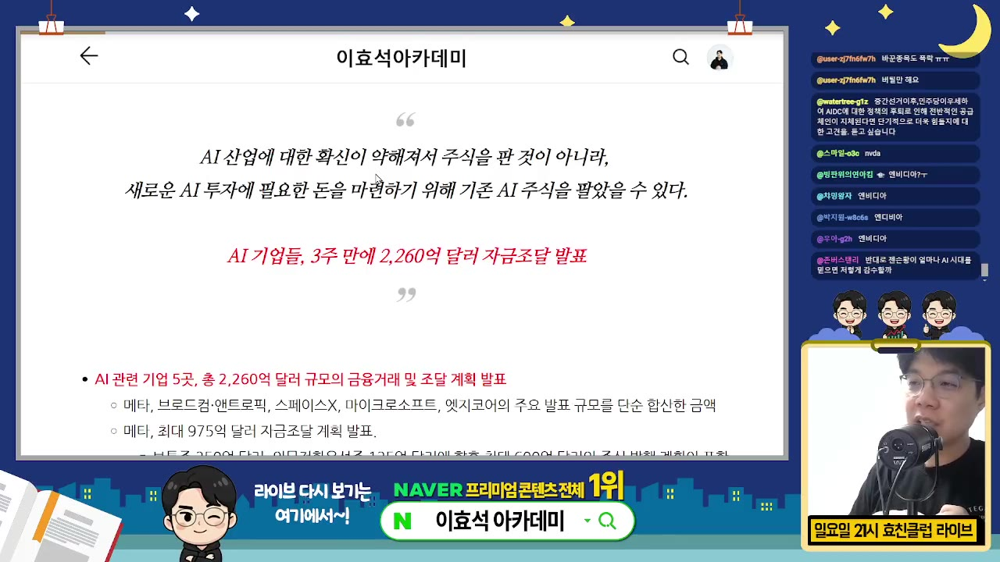

한눈에 보기
- 이효석 씨는 10월 말 AI 주식 급락을 'AI가 끝나서'가 아니라 '새 AI 투자에 들어갈 돈을 마련하려고 기존 AI 주식을 판 것'일 수 있다고 봅니다. 가설로 내놓은 주장입니다.
- 지금 시장을 무겁게 하는 신호는 네 가지입니다. 금리가 5%에 가까워졌고, 유가는 오르는데 금·은은 내리며, 오라클·엔비디아의 CDS(부도 위험 보험료)가 올랐고, 헤지펀드가 롱·숏을 한꺼번에 줄이는 디그로싱이 나왔습니다.
- 미국 주식은 조정이 더 이어질 수 있다고 봅니다. S&P500이 200일선을 위협하거나 잠깐 깨는 정도까지 생각해 두라는 말입니다.
- 그래도 AI 혁명은 10년짜리 흐름이고 큰 가치는 미국에서 만들어진다고 봅니다. 그래서 미국 비중을 늘리자는 생각은 그대로입니다.
- 가장 두려워할 것은 주가 하락이 아니라 '혁명은 계속되는데 내가 중간에 시장에서 밀려나는 것'입니다. 그래서 버틸 수 있는 구조를 만들라고 강조합니다.
이런 분께 도움이 됩니다
- 10월 말 나스닥·반도체 급락의 원인이 궁금한 미국 주식 투자자
- 조정장에서 장기 AI 투자를 이어갈지 고민하는 분
- 금리·원자재·CDS 같은 매크로 지표를 시장 판단에 어떻게 쓰는지 보고 싶은 분
핵심 내용
영상은 3부 방송 가운데 1부(매크로 분석)만 공개한 것입니다. 2부(자금 조달 내역 정리)와 3부(엔트로픽 이야기)는 예고만 나옵니다. 아래는 모두 영상 속 주장이며 투자 권유가 아닙니다.
결론: 조정은 이어질 수 있지만 버티는 구조가 핵심
- 미국 주식은 위에서 보든(탑다운) 개별 종목에서 보든(바텀업) 조정이 더 이어진다고 보는 게 맞다고 합니다. (10:41)
- S&P500 기준으로 200일선을 위협하거나, 잠깐 깨고 내려갔다가 다시 올라오는 움직임까지 각오하라고 합니다.
- 그렇다고 '망했다'는 상황은 아니라고 봅니다.
- 혁명이 계속된다고 믿는다면 가장 두려워할 것은 하락 자체가 아니라 중간에 시장에서 퇴출당하는 것이라고 합니다. (0:00)
💡 10년을 보고 가려면 조정 때 밀려나지 않는 구조가 먼저다.
그래도 미국 비중은 늘린다
- AI 사이클은 10년 가는 사이클이라고 봅니다. 모바일 혁명이 20조 달러 시장이었다면 AI 혁명은 최소 40~60조 달러 시장이라는 주장입니다. (3:59)
- 이 가치의 대부분은 미국 시장에서 만들어진다고 봅니다. 반도체 덕분에 한국 시장도 좋았지만 장기 관심은 미국 쪽에 두라는 기존 의견을 유지합니다.
- 이번 주 구글이 흔들린 것도 '큰일 났다'가 아니라 '구글까지 흔들 만큼 창조적 파괴가 일어나는 나라'로 읽어야 한다고 말합니다.
- 엔트로픽과 '뮤즈'(자막상 불분명. 새 AI 모델이나 서비스 이름으로 보임) 같은 새 주자가 구글을 흔드는 역동성 자체를 근거로 듭니다.
💡 공룡이 흔들린다는 건 미국에서 AI 부가가치가 커진다는 신호다.
지수 위치: 세 번째 조정 구간
- S&P500을 장기 차트로 보면 200일선 기준으로는 아직 많이 빠지지 않았다고 합니다. 2025년 4월 관세 충격, 올해 초 조정에 이은 세 번째 조정이 시작된 것이라는 판단입니다. (1:12)

- 나스닥은 금요일에 박스권 아래로 이탈했습니다. 8월 저점보다는 높지만 200일선 근처까지 위협받고 있습니다.
- S&P500도 박스권을 아래로 벗어났지만 아직은 여유가 있다고 봅니다.
- 반도체 ETF '속스'(SOXX로 보임)는 200일선을 깼습니다. 밑꼬리를 달고 올라오긴 했지만 추가 하락 가능성을 열어 두라고 합니다. (10:00)

- 보안 ETF '버그'(자막상 표기, BUG로 추정)는 미국 ETF 가운데 성과가 가장 좋고 내러티브(시장이 믿는 성장 이야기)도 가장 강합니다. 그런데 여기서도 매도 신호가 나오고 있다고 합니다.
9월에 경고했던 위험이 10월에 왔다
- 평소 '좋다'는 말을 주로 하는데, 9월 전략 때 이례적으로 '조심하자'고 했다고 합니다. (2:08)
| 9월에 꼽은 위험 | 지금 상황(영상 주장) |
|---|---|
| 금리 5% 돌파 가능성 | 9월엔 괜찮았지만 10월에 영향이 나타남 |
| 엔트로픽 상장 | 스페이스X 때처럼 자금 블랙홀이 될 수 있다고 봤음. 지금은 엔트로픽뿐 아니라 여러 기업이 한꺼번에 돈을 빌리는 게 문제 |
| 유가 | 계속 오름 |
| 정치(중간선거) | 다음 주 중간선거 뒤 흐름을 확인해야 함 |
- 9월에 걱정한 것들이 시간차 공격처럼 10월에 오고 있다고 합니다. (3:04)

원자재 신호: 유가는 오르고 금·은은 빠진다
- 유가는 계속 오르는데 금값은 계속 빠지고 은도 빠집니다. 주식시장에는 좋지 않은 원자재 흐름이라고 봅니다. (5:40)
- 유가 상승은 그 자체로 부담입니다.
- 안전자산인 금·은마저 빠진다는 건 전반적인 매크로 분위기가 우호적이지 않다는 신호로 해석합니다.

신용 위험: 오라클·엔비디아 CDS 상승
- CDS 프리미엄(회사가 부도날 때를 대비한 보험료로, 높을수록 시장이 그 회사의 부도 위험을 크게 본다는 뜻)을 9월부터 매일 점검해 왔다고 합니다.
- 오라클 CDS는 9월에 220~230이었는데 지금은 300을 넘었습니다. 실적 발표 뒤 내려왔다가 금요일에 다시 올라 아직 진정됐다고 보기 어렵다고 합니다. (8:05)
- 빅테크 가운데 CDS가 가장 높은 곳은 엔비디아입니다. 6월에는 가장 낮았는데 꾸준히 올라 1위가 됐습니다. (8:44)
- 엔비디아가 여기저기 서 준 보증이 부실해질 수 있다는 우려가 반영된 것이라고 해석합니다.
- 그래서 PER(주가수익비율)이 15배 아래로 내려가도 사지 않는다고 봅니다.
- 메타는 원래 가장 높았지만 '뮤즈'가 나온 뒤 낮아졌습니다. 유상증자를 발표했는데도 2위입니다.
💡 시장은 AI 기업의 실적보다 '돈 문제'를 걱정하고 있다.

한국 시장: 나쁘지만 최악은 아니다
- 미국에 상장된 한국 ETF인 EWY에 외국인 자금이 다시 들어오려는 움직임이 보입니다. 가격이 많이 빠진 영향이라고 봅니다. (6:34)
- EWY의 EPS(주당순이익) 전망치는 삼성전자·하이닉스 실적 발표 뒤 다시 올라가고 있습니다.

- 다만 키옥시아 실적 이후 홍콩·싱가포르에서 낸드 업황이 나쁘다는 이야기가 나옵니다. 그래서 월요일에 삼성전자·하이닉스가 조정받고 전저점을 밑돌 가능성도 있다고 합니다. (7:07)
- 그래도 D램 전망은 여전히 좋고 이것이 주가에 반영되지 않았다고 봅니다. 외국인 수급과 EPS 전망을 보면 아주 나쁜 상황만은 아니라는 판단입니다.
하락 원인 가설: '자본 부족'이 용의자
- 인텔·구글 실적에서 읽히는 것은 'AI가 끝났다'가 아니라 'AI가 너무 잘돼서 다른 쪽이 피해를 본다'는 점이라고 합니다. (11:50)
- 인텔의 병목은 CPU와 기판입니다. 예전 병목은 돈으로 풀렸지만 지금은 시간이 걸려 답답한 분위기라고 합니다.
- 펀더멘털 문제를 부정할 수는 없지만 시장 움직임에 이상한 점이 두 가지 있다고 합니다.
- 헤지펀드 디그로싱: 2016년 이후 가장 심한 수준입니다. 롱(매수) 종목은 빠지고 숏(공매도) 종목은 올라 둘 다 급하게 줄여야 했다는 뜻입니다. 레버리지를 한꺼번에 줄이는 디레버리징과 같은 성격입니다. (12:49)

- 나스닥에만 몰린 공매도: AI가 끝났다고 보는 것만으로는 설명이 이상하다고 합니다.
- 그래서 세운 가설은 'AI에 대한 확신이 약해져서 판 게 아니라, 새 AI 투자에 필요한 돈을 마련하려고 AI 주식을 팔았다'는 것입니다. (14:41)

- 브로드컴 CEO가 "지금 AI에 부족한 건 메모리도 메모리지만 자본"이라고 말한 뒤로 시장이 힘없이 밀렸다고 짚습니다.
- 메타·아마존·구글에 엔트로픽·오픈AI까지 더하면 발표된 자금 조달이 약 2,200억~3,000억 달러라고 합니다.
- 지난번 스페이스X 상장 때 조달 규모 400억 달러의 8~10배에 가깝다고 말합니다(3,000억 ÷ 400억으로 계산하면 약 7.5배).
🔁 '자본 부족' 가설로 본 하락 과정 (영상 속 가설)
- 대규모 조달 발표
- 현금 마련 압박
- 나스닥 선제 공매도
- 주가 하락·디그로싱
- 싸게 사서 참여
- 1대규모 조달 발표
메타·아마존·구글·엔트로픽·오픈AI가 잇달아 자금 조달을 예고함. 합계 2,000억~3,000억 달러
- 2현금 마련 압박
투자자들이 새 투자에 들어갈 돈을 마련하려면 기존 주식을 팔아야 한다고 판단함
- 3나스닥 선제 공매도
나중에 팔면 다 같이 빠질 테니 먼저 숏을 쳐 둠
- 4주가 하락·디그로싱
매도가 몰려 AI 주식이 급락하고 헤지펀드가 롱·숏을 한꺼번에 줄임
- 5싸게 사서 참여
떨어진 뒤 다시 사거나 현금을 확보해 새 투자에 들어가려는 흐름
2·3부 예고: 자금 조달 내역과 '해결사' 엔트로픽
기억할 숫자·인용
- 5%: 9월에 경고한 시장 부담 금리 수준
- 20조 달러 vs 40~60조 달러: 모바일 혁명과 AI 혁명의 시장 규모 비교(발표자 추정)
- 220~230 → 300 이상: 9월 이후 오라클 CDS 프리미엄
- PER 15배: 엔비디아 PER이 이 아래로 내려가도 매수세가 없다고 언급
- 2,200억~3,000억 달러: 최근 발표된 AI 관련 자금 조달 규모
- 400억 달러: 스페이스X 상장 때 조달 규모
- 20~30%: 엔트로픽·오픈AI가 상장돼 있었다면 빠졌을 거라고 본 하락 폭
- 2016년 이후 최악: 헤지펀드 디그로싱 수준
- "구글이 흔들려? 큰일 났다가 아니라, 구글 같은 회사도 흔들 정도의 창조적 파괴가 진행되는구나."
- "AI 혁명이 계속된다면 두려워할 것은 주가 하락이 아니라 내가 중간에 시장에서 퇴출당하는 상황이다."
생각해볼 점
- 가설일 뿐입니다. 발표자 스스로 '범인은 아직 밝혀지지 않았고 용의자만 나왔다'고 말합니다. 뉴욕 투자자들의 대화도 상상으로 연출한 장면입니다. 자금 조달 때문에 공매도했다는 직접 증거는 영상에 나오지 않습니다.
- 규모 비교는 직접 확인이 필요합니다. '8~10배'는 단순 계산(약 7.5배)과 조금 다릅니다. 발표된 조달 금액이 실제로 한꺼번에 시장에서 빠져나가는지, 아니면 채권·장기 분할 집행인지에 따라 주식시장에 주는 압박이 크게 달라집니다(내 의견).
- '버틸 수 있는 구조'가 구체적으로 무엇인지는 1부에 나오지 않습니다. 현금 비중, 레버리지, 분할 매수 같은 방법은 각자 정해야 합니다.
바로 해볼 일
- 내 계좌에 신용·레버리지가 있다면 S&P500이 200일선 아래로 한 번 더 빠질 때도 버틸 수 있는지 점검하기
- 미국 주식 비중과 한국 반도체 비중을 확인하고, 장기 목표 비중과 얼마나 차이 나는지 적어 두기
- 이번 주 중간선거 결과, 오라클·엔비디아 CDS, SOXX의 200일선 회복 여부를 지켜볼 지표로 메모하기